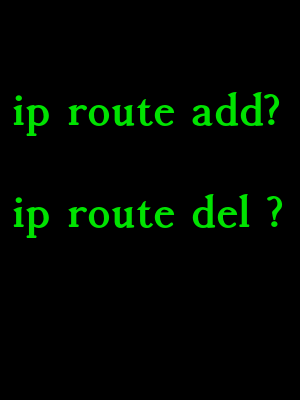

Last time we talked about getting a Linux routing table with a simple Netlink code.
Now it’s time to do more interesting stuff. Let’s add and delete some routes using the power of the Netlink!
At the end of this article, we will create a command-line utility with syntax similar to ip route command, which can add and delete custom routes.
Like in previous examples, everything starts with a Netlink socket.
/* Open netlink socket */
int open_netlink()
{
int sock = socket(AF_NETLINK, SOCK_RAW, NETLINK_ROUTE);
if (sock < 0) {
perror("Failed to open netlink socket");
return -1;
}
return sock;
}
And that’s it!
We don’t need to bind to the socket or do some other things. All we have to do is to build a special message and send it to the Netlink socket.
Let’s describe the message structure.
struct {
struct nlmsghdr n;
struct rtmsg r;
char buf[4096];
} nl_request;
Now we need to configure some fields of nlmsghdr and rtmsg.
Some of them are basic and used both in “add” and “delete” requests, but some contain actual command of what to do.
Basic initialization:
nl_request.n.nlmsg_len = NLMSG_LENGTH(sizeof(struct rtmsg)); nl_request.r.rtm_table = RT_TABLE_MAIN; nl_request.r.rtm_scope = RT_SCOPE_NOWHERE; nl_request.n.nlmsg_flags = 0;
Let’s specify what we want to do – add or remove the route.
To add a new route, specify nlmsg_type as RTM_NEWROUTE
nl_request.n.nlmsg_type = RTM_NEWROUTE;
And RTM_DELROUTE in case of deleting
nl_request.n.nlmsg_type = RTM_DELROUTE;
Additionally, we can specify flags for the “add” operation, combining with NLM_F_REQUEST flag.
NLM_F_REPLACE Replace existing matching object.
NLM_F_EXCL Don’t replace if the object already exists.
NLM_F_CREATE Create object if it doesn’t already exist.
NLM_F_APPEND Add to the end of the object list.
Create a new routing table entry and don’t replace already existing record:
nl_request.n.nlmsg_flags = NLM_F_REQUEST | NLM_F_CREATE | NLM_F_EXCL
Also, we need to specify the route type in case of adding a new one.
RTN_UNSPEC unknown route
RTN_UNICAST a gateway or direct route
RTN_LOCAL a local interface route
RTN_BROADCAST a local broadcast route (sent as a broadcast)
RTN_ANYCAST a local broadcast route (sent as a unicast)
RTN_MULTICAST a multicast route
RTN_BLACKHOLE a packet dropping route
RTN_UNREACHABLE an unreachable destination
RTN_PROHIBIT a packet rejection route
RTN_THROW continue routing lookup in another table
RTN_NAT a network address translation rule
In simple cases, we can use RTN_UNICAST:
if (nl_request.n.nlmsg_type != RTM_DELROUTE) {
nl_request.r.rtm_type = RTN_UNICAST;
}
Now the most interesting part – adding route details. It may vary depending on what we want. We can specify the target network, gateway, network interface, or just gateway.
According to these details – protocol family, scope, and address length should be set.
Let’s describe a simple case with the IPv4 route.
nl_request.r.rtm_family = AF_INET; nl_request.r.rtm_scope = RT_SCOPE_LINK;
If we add a route to some network, not a default gateway – we also need to specify destination address length in Bits. It’s simply 32 for IPv4 and 128 for IPv6.
nl_request.r.rtm_dst_len = 32;
Typically IP addresses are represented in human-readable text forms, but Netlink accepts only binary format.
To deal with this, we can use inet_pton function from arpa/inet.h.
This function supports converting both IPv4 and IPv6 into binary form.
Conversion of the AF_INET (IPv4) address 192.168.1.0 into binary form and put it to data buffer:
#include <arpa/inet.h> unsigned char data[sizeof(struct in6_addr)]; inet_pton(AF_INET, "192.168.1.0", data);
In some cases, we also need to specify the outgoing network interface.
User-friendly names like “eth0” should also be converted to numeric indexes. Here we can use if_nametoindex from net/if.h.
#include <net/if.h>
int if_idx = if_nametoindex("eth0");
To add IP addresses data and interface index to our Netlink request, we need to use a special function that actually acts as a reverse of the parse_rtattr from the previous articles.
/* Add new data to rtattr */
int rtattr_add(struct nlmsghdr *n, int maxlen, int type, const void *data, int alen)
{
int len = RTA_LENGTH(alen);
struct rtattr *rta;
if (NLMSG_ALIGN(n->nlmsg_len) + RTA_ALIGN(len) > maxlen) {
fprintf(stderr, "rtattr_add error: message exceeded bound of %d\n", maxlen);
return -1;
}
rta = NLMSG_TAIL(n);
rta->rta_type = type;
rta->rta_len = len;
if (alen) {
memcpy(RTA_DATA(rta), data, alen);
}
n->nlmsg_len = NLMSG_ALIGN(n->nlmsg_len) + RTA_ALIGN(len);
return 0;
}
And here is how to use this function and add network interface-id to our nl_request structure:
rtattr_add(&nl_request.n, sizeof(nl_request), RTA_OIF, &if_idx, sizeof(int));
Add gateway:
rtattr_add(&nl_request.n, sizeof(nl_request), RTA_GATEWAY, gw_bin_data, 16);
gw_bin_data is IP address binary data acquired with inet_pton, and 16 is IPv4 address length in bytes (not a bit in this case), for IPv6 use 16.
We can use attribute type RTA_DST or RTA_NEWDST on the newest Linux kernels to add a destination network. Just check what’s available on your system.
rtattr_add(&nl_request.n, sizeof(nl_request), /*RTA_NEWDST*/ RTA_DST, dst_net_bin_data, 16);
Please note that there are some rules with a combination of these attributes. For the default gateway, we DON’T need to specify the destination network and even network interface id. The kernel can figure it out by itself.
Now send this message to the socket.
send(sock, &nl_request, sizeof(nl_request), 0);
A complete example is below.
I decided to write a program with quite a complex command-line interface that can act as the ip route tool. All arguments parsing is implemented withing main() function, parser requires strict order of the params.
This program might be buggy and imperfect, but this is just an example that can do the job 🙂
/*
*
*/
#include <string.h>
#include <stdlib.h>
#include <stdio.h>
#include <sys/types.h>
#include <unistd.h>
#include <net/if.h>
#include <arpa/inet.h>
#include <sys/socket.h>
#include <linux/rtnetlink.h>
/* Open netlink socket */
int open_netlink()
{
struct sockaddr_nl saddr;
int sock = socket(AF_NETLINK, SOCK_RAW, NETLINK_ROUTE);
if (sock < 0) {
perror("Failed to open netlink socket");
return -1;
}
memset(&saddr, 0, sizeof(saddr));
return sock;
}
/* Helper structure for ip address data and attributes */
typedef struct {
char family;
char bitlen;
unsigned char data[sizeof(struct in6_addr)];
} _inet_addr;
/* */
#define NLMSG_TAIL(nmsg) \
((struct rtattr *) (((void *) (nmsg)) + NLMSG_ALIGN((nmsg)->nlmsg_len)))
/* Add new data to rtattr */
int rtattr_add(struct nlmsghdr *n, int maxlen, int type, const void *data, int alen)
{
int len = RTA_LENGTH(alen);
struct rtattr *rta;
if (NLMSG_ALIGN(n->nlmsg_len) + RTA_ALIGN(len) > maxlen) {
fprintf(stderr, "rtattr_add error: message exceeded bound of %d\n", maxlen);
return -1;
}
rta = NLMSG_TAIL(n);
rta->rta_type = type;
rta->rta_len = len;
if (alen) {
memcpy(RTA_DATA(rta), data, alen);
}
n->nlmsg_len = NLMSG_ALIGN(n->nlmsg_len) + RTA_ALIGN(len);
return 0;
}
int do_route(int sock, int cmd, int flags, _inet_addr *dst, _inet_addr *gw, int def_gw, int if_idx)
{
struct {
struct nlmsghdr n;
struct rtmsg r;
char buf[4096];
} nl_request;
/* Initialize request structure */
nl_request.n.nlmsg_len = NLMSG_LENGTH(sizeof(struct rtmsg));
nl_request.n.nlmsg_flags = NLM_F_REQUEST | flags;
nl_request.n.nlmsg_type = cmd;
nl_request.r.rtm_family = dst->family;
nl_request.r.rtm_table = RT_TABLE_MAIN;
nl_request.r.rtm_scope = RT_SCOPE_NOWHERE;
/* Set additional flags if NOT deleting route */
if (cmd != RTM_DELROUTE) {
nl_request.r.rtm_protocol = RTPROT_BOOT;
nl_request.r.rtm_type = RTN_UNICAST;
}
nl_request.r.rtm_family = dst->family;
nl_request.r.rtm_dst_len = dst->bitlen;
/* Select scope, for simplicity we supports here only IPv6 and IPv4 */
if (nl_request.r.rtm_family == AF_INET6) {
nl_request.r.rtm_scope = RT_SCOPE_UNIVERSE;
} else {
nl_request.r.rtm_scope = RT_SCOPE_LINK;
}
/* Set gateway */
if (gw->bitlen != 0) {
rtattr_add(&nl_request.n, sizeof(nl_request), RTA_GATEWAY, &gw->data, gw->bitlen / 8);
nl_request.r.rtm_scope = 0;
nl_request.r.rtm_family = gw->family;
}
/* Don't set destination and interface in case of default gateways */
if (!def_gw) {
/* Set destination network */
rtattr_add(&nl_request.n, sizeof(nl_request), /*RTA_NEWDST*/ RTA_DST, &dst->data, dst->bitlen / 8);
/* Set interface */
rtattr_add(&nl_request.n, sizeof(nl_request), RTA_OIF, &if_idx, sizeof(int));
}
/* Send message to the netlink */
return send(sock, &nl_request, sizeof(nl_request), 0);
}
/* Simple parser of the string IP address
*/
int read_addr(char *addr, _inet_addr *res)
{
if (strchr(addr, ':')) {
res->family = AF_INET6;
res->bitlen = 128;
} else {
res->family = AF_INET;
res->bitlen = 32;
}
return inet_pton(res->family, addr, res->data);
}
#define NEXT_CMD_ARG() do { argv++; if (--argc <= 0) exit(-1); } while(0)
int main(int argc, char **argv)
{
int default_gw = 0;
int if_idx = 0;
int nl_sock;
_inet_addr to_addr = { 0 };
_inet_addr gw_addr = { 0 };
int nl_cmd;
int nl_flags;
/* Parse command line arguments */
while (argc > 0) {
if (strcmp(*argv, "add") == 0) {
nl_cmd = RTM_NEWROUTE;
nl_flags = NLM_F_CREATE | NLM_F_EXCL;
} else if (strcmp(*argv, "del") == 0) {
nl_cmd = RTM_DELROUTE;
nl_flags = 0;
} else if (strcmp(*argv, "to") == 0) {
NEXT_CMD_ARG(); /* skip "to" and jump to the actual destination addr */
if (read_addr(*argv, &to_addr) != 1) {
fprintf(stderr, "Failed to parse destination network %s\n", *argv);
exit(-1);
}
} else if (strcmp(*argv, "dev") == 0) {
NEXT_CMD_ARG(); /* skip "dev" */
if_idx = if_nametoindex(*argv);
} else if (strcmp(*argv, "via") == 0) {
NEXT_CMD_ARG(); /* skip "via"*/
/* Instead of gw address user can set here keyword "default" */
/* Try to read this keyword and jump to the actual gateway addr */
if (strcmp(*argv, "default") == 0) {
default_gw = 1;
NEXT_CMD_ARG();
}
if (read_addr(*argv, &gw_addr) != 1) {
fprintf(stderr, "Failed to parse gateway address %s\n", *argv);
exit(-1);
}
}
argc--; argv++;
}
nl_sock = open_netlink();
if (nl_sock < 0) {
exit(-1);
}
do_route(nl_sock, nl_cmd, nl_flags, &to_addr, &gw_addr, default_gw, if_idx);
close (nl_sock);
return 0;
}
Before testing, let’s print the current routing table:
$ ip route
default via 192.168.8.1 dev eth0
192.168.8.0/24 dev eth0 proto kernel scope link src 192.168.8.2
Now compile our program.
gcc set_route.c -o set_route
Add a new route to network 192.168.1.0 via eth0:
$ sudo ./set_route add to 192.168.1.0 dev eth0
$ ip route
default via 192.168.8.1 dev eth0
192.168.1.0 dev eth0 proto none scope link
192.168.8.0/24 dev eth0 proto kernel scope link src 192.168.8.2
Works!
Delete this route:
$ sudo ./set_route del to 192.168.1.0 dev eth0
$ ip route
default via 192.168.8.1 dev eth0
192.168.8.0/24 dev eth0 proto kernel scope link src 192.168.8.2
More examples.
Add route to 192.168.1.0 using eth0 and 192.168.8.1 gateway: sudo ./set_route add to 192.168.8.0 dev eth0 via 192.168.8.1
Delete this route: sudo ./set_route del to 192.168.8.0 dev eth0 via 192.168.8.1
To add default gateway via 192.168.8.1 just: sudo ./set_route add via default 192.168.8.1
Thanks for reading!
Delete route is not working.
I have the following entry in Routing table :
192.168.8.7 192.168.117.2 255.255.255.255 UGH 0 0 0 ens33
sudo ./set_route del to 192.168.8.7 dev ens33
The above entry continue to exist.
Even addition case, sometimes it dont work.
It’s source specific routing